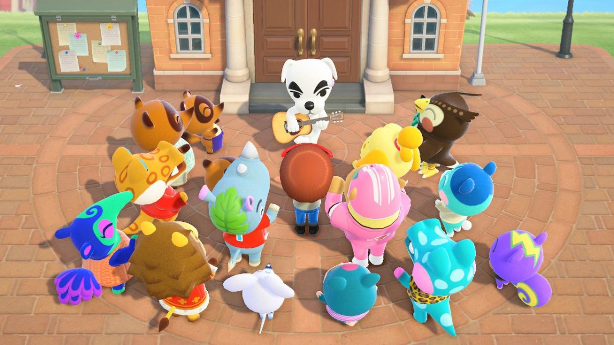
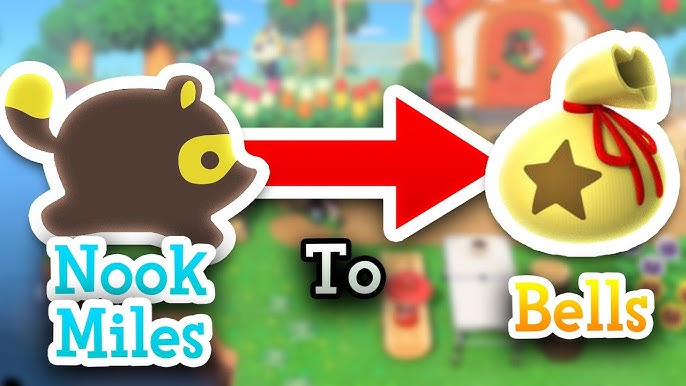
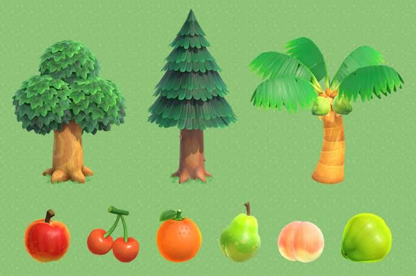
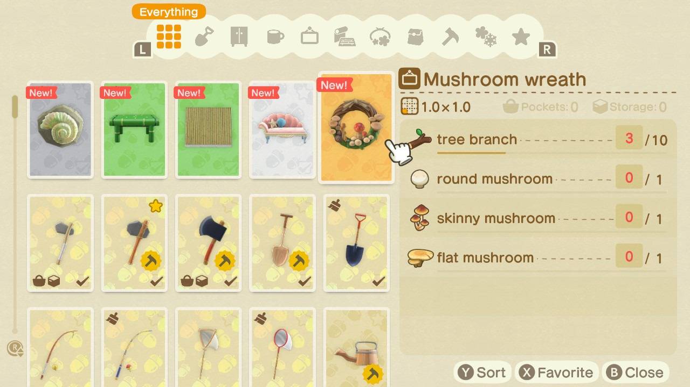
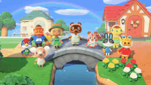
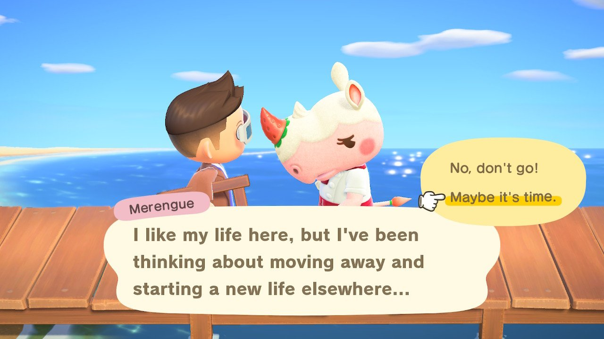

Basic Concepts and tips
Start
The first thing you need to do is name your island. After that, Tom Nook(the raccoon who runs the island`s real estate market) will assign you your first tasks. Although the game doesn`t have an official ending, it`s considered complete once you earn a 3-star rating for your island and Totakeke comes to perform there.

Currency in the game
The in-game currency is Bells,
which you'll mainly use to buy decorative items.
You can earn

Tip
The best way to earn Bells is by selling fruit. Your island has one type of fruit by default, but you can get more fruit by visiting other islands, receiving it from your friends, or using Nook Miles.

DIY projects
In the game, most decorative items are obtained through

Island residents
The residents of your island are visitors who decide to stay and live there. The maximum number of residents who can live on your island is 10. To improve your relationship with your neighbors, you can talk to them and give them gifts.
Main residents
- Tom Nook: Island manager and mortgage specialist
- Isabelle: Secretary and Chief Assistant to the Town
- Blathers: Museum director

Tip
If you don't like a neighbor, just ignore them. They'll tell you they want to leave, and you'll have their house to welcome a new neighbor.
